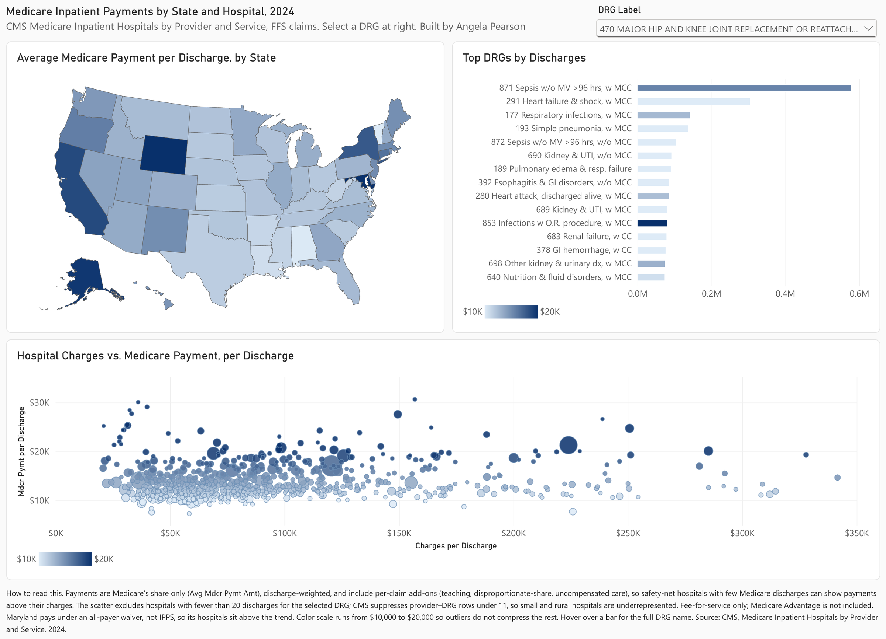
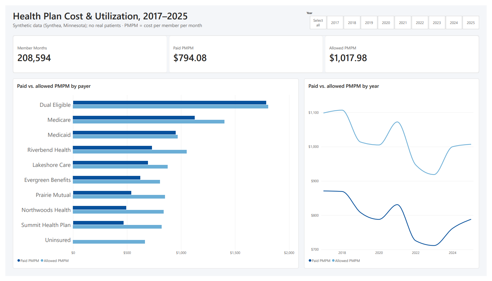
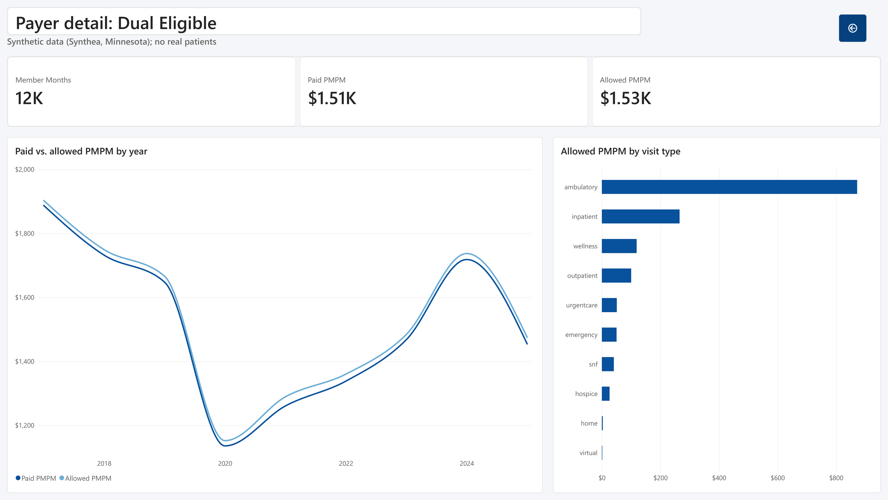

Medicare Inpatient Payments by State and Hospital, 2024
Interactive. Choose a DRG from the dropdown; click a state on the map to filter the other two charts; click it again to clear.
What it shows
Where Medicare's inpatient dollars go, by state and by hospital, for any of the roughly 500 MS-DRGs in the 2024 CMS provider-and-service file (about 146,000 provider–DRG rows, 3,000+ hospitals).
- Charges and payments barely relate. For a given procedure, hospitals' submitted charges range roughly nine-fold while Medicare's payment stays within a narrow band. That is the prospective payment system working as designed: payment is set by DRG weight and local wage index, not by the sticker price.
- Severity drives cost, not volume. In the top-15 DRGs by discharges, every "with MCC" DRG pays more per case than its "with CC" or "without MCC" sibling, while medical admissions (sepsis, heart failure, pneumonia) dominate volume.
- Geography is mostly wage index. California, New York, and Alaska stay expensive across DRGs. Maryland sits above the trend for a different reason: it pays hospitals under a state all-payer waiver rather than IPPS.
- Case mix can mislead. Unfiltered, Minnesota looks like a high-cost state; filtered to a single DRG it drops to the middle, because its hospitals treat a sicker mix rather than charging more per case.
How it was built
- Source: CMS, Medicare Inpatient Hospitals by Provider and Service, calendar year 2024 (fee-for-service claims; Medicare Advantage excluded). Provider IDs (CCNs) were loaded as text to preserve leading zeros.
- Measures: Per-discharge payments are discharge-weighted averages,
SUM(avg × discharges) / SUM(discharges), never averages of hospital averages. "Payment" is Medicare's share only (Avg Mdcr Pymt Amt), not total hospital receipts. - Counting rules: Hospitals with fewer than 20 discharges for the selected DRG are excluded from the scatter. CMS suppresses provider–DRG rows under 11 discharges, so small and rural hospitals are underrepresented in the file.
- Design: One sequential color scale, fixed at $10,000–$20,000 and shared by all three charts, so an outlier DRG does not compress the rest. Tooltips carry the uncapped value.
- Tools: Tableau Public (calculated fields, filter actions, dashboard actions). Data prepared without modification from the CMS download.
The same analysis, rebuilt in Power BI
To compare the two tools, I rebuilt this dashboard in Power BI Desktop from the same CMS file. Open the Power BI version (PDF)
- Power Query: provider IDs, ZIP, FIPS, and DRG codes typed as text before load, so leading zeros survive.
- DAX: the discharge-weighted payment as
DIVIDE(SUMX(…, avg × discharges), SUM(discharges)), reconciled to Tableau to the dollar ($15,166 nationally). - Report: shape map with a fixed $10,000–$20,000 scale, short DRG labels with full CMS names in tooltips, a searchable DRG slicer, and Edit Interactions so the slicer skips the top-15 bars.

Health Plan Cost & Utilization, 2017–2025
A payer-style cost dashboard: cost per member per month (PMPM) by health plan, drill-down to county and visit type, and a drill-through for each plan, built in both tools from the same data. Interactive Tableau version below: click a plan's bar to filter the trend to that plan, click it again to clear; hover the "Payer" header and press + to drill to county and visit type.
What it shows
2,272 simulated Minnesotans, 87,163 encounters, and about 207,000 member months across ten payers: Medicare, Medicaid, dual eligible, six fictional commercial plans, and uninsured. Overall paid PMPM is about $832; allowed PMPM about $1,064.
- Dual-eligible members cost the most. About $1,550 paid PMPM, nearly twice the overall figure, consistent with real-world patterns for people covered by both Medicare and Medicaid.
- The gap between paid and allowed is the member's share. Medicaid's two figures nearly touch ($1,041 vs. $1,063) because members pay almost nothing; the commercial plans show the widest gaps.
- Uninsured paid PMPM is $0, by definition. No plan pays, so their cost only appears in allowed PMPM, which is why both are reported.
- Small denominators need care. The commercial plans have a few hundred members each, so one inpatient stay moves a month's PMPM by hundreds of dollars; drilling Medicaid to county level puts small counties at the top for the same reason.
Because the data is simulated, these patterns describe the model, not any real plan.
How it was built (Tableau)
- Data: Synthea (MITRE's open-source synthetic patient generator), Minnesota, fixed seed. Commercial payer names replaced with fictional ones; names, SSNs, and addresses dropped even though they were fake. Yearly encounter files combined with a wildcard union, so new files load automatically.
- Model: six tables related in Tableau's logical layer (relationships, not joins), so nothing is merged until a chart asks for it and row counts stay honest.
- Member months: an eligibility table built upstream from the coverage periods, one row per member × plan × month, the way a real plan's data warehouse delivers it. A member counts for a month if covered on the 1st; a coverage row that ends on the 1st does not count, so no one is counted twice when a plan change falls on the 1st (206,768 member months).
- Relationship on a calculated field: eligibility is related to claims on plan and
DATE(DATETRUNC('month', Start)) = Month, so PMPM works at any date grain: numerator from claims, denominator from eligibility, joined at query time. - Measures: Paid PMPM =
SUM(paid) / SUM(member months)as an aggregate ratio, so every total is a ratio of sums, never an average of averages. Reconciled to the cent against an independent Python calculation. - Interaction: a plan › county › visit type hierarchy for +/− drill-down; a filter action lets the bar chart drive the trend; the detail title reads the filtered plan.
The same model, built in Power BI
The Power BI version has an overview page with KPI cards and a drill-through page per plan. Open the full report (PDF)
- Power Query: encounter files combined from a folder, so new yearly files load on refresh; codes typed as text.
- Model: hand-built star schema, two fact tables (encounters, coverage periods) and four dimensions, one-to-many single-direction joins, plus a marked date table.
- DAX: member months counted from coverage start and end dates with a month-overlap test and a distinct count (207,003; the 0.1% difference from the Tableau figure is the counting rule, not the data); PMPM = plan paid ÷ member months.
- Report: drill-down hierarchy (plan → county → visit type), drill-through detail page with a dynamic title, report-page tooltips, and a custom JSON theme.

